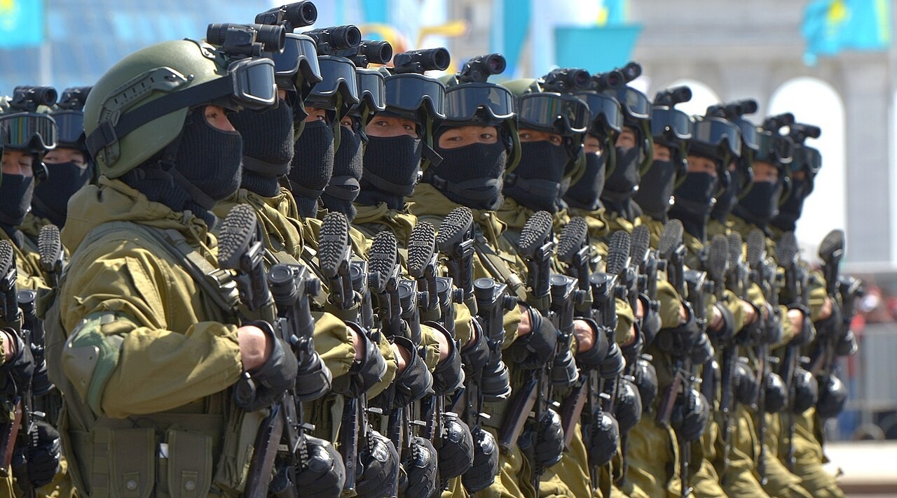

Әскери негіздер · №2 · Әскер түрлері Military Basics · No.2 · Services Воинские основы · №2 · Виды войск
Әр түр өз ортасында міндет атқарады — жер, әуе, теңіз. Each service operates in its own domain — land, air and sea. Каждый вид решает задачи в своей сфере — земля, воздух, море.

Қарулы күштер (ҚК) — мемлекеттің әскери қауіпсіздігін қамтамасыз етуге, оның тәуелсіздігі мен аумақтық тұтастығын қорғауға арналған мемлекеттік әскери ұйым. ҚК құрылымдық тұрғыдан әскер түрлеріне (соғыс жүргізілетін орта бойынша) және әскер тектеріне (қаруы, жарақтануы мен міндеттері бойынша) бөлінеді. The Armed Forces are the state military organisation that secures the country's military security and defends its independence and territorial integrity. Structurally they are split into services (by the domain in which combat is waged) and branches of arms (by weaponry, equipment and tasks). Вооружённые силы (ВС) — государственная военная организация, обеспечивающая военную безопасность страны, защиту её независимости и территориальной целостности. Структурно ВС делятся на виды (по среде ведения боевых действий) и рода войск (по вооружению, оснащению и задачам).
Айырмашылығы: түр — ірі ұйымдық бірлік (жер, әуе, теңіз); тек — түр ішіндегі мамандандырылған бөлік (мысалы, құрлық әскерлерінің құрамындағы танк әскерлері). The difference: a service is a major organisational entity (land, air, sea); a branch is a specialised part within a service (for example, tank troops within the Ground Forces). Разница: вид — крупное организационное объединение (суша, воздух, море); род — специализированная часть внутри вида (например, танковые войска в составе Сухопутных войск).
| Әскер түріServiceВид войск | ОртаDomainСфера | Негізгі міндетіMain roleОсновная задача |
|---|---|---|
| Құрлық әскерлеріGround ForcesСухопутные войска | жерlandземля | жау тобын талқандау, аумақты ұстау және басып алу — ең көп санды түрdefeating the enemy, holding and seizing ground — the most numerous serviceразгром группировки, удержание и захват территории — самый многочисленный вид |
| Әуе қорғанысы күштеріAir Defence ForcesСилы воздушной обороны | әуеairвоздух | әуе кеңістігін қорғау, әуеден соққы беру және әскерді қолдау (ӘК пен ӘШҚ бірге)guarding the airspace, air strikes and support (Air Force and AD combined)защита воздушного пространства, удары и поддержка с воздуха (ВВС и ПВО вместе) |
| Әскери-теңіз күштеріNaval ForcesВоенно-морские силы | теңізseaморе | Каспий теңізіндегі мемлекеттік мүддені қорғау, жағалауды күзетуdefending state interests in the Caspian Sea, coastal protectionзащита интересов на Каспии, охрана побережья |
Үш түрге қоса, дербес жедел әрекет ету (десанттық-шабуыл) күштері және орталыққа бағынатын зымыран әскерлері мен артиллерия бар — олар кез келген бағытта күшейту мен от соққысын береді. Beyond the three services there are the separate rapid-reaction (air-assault) forces and the centrally subordinated missile forces and artillery — they provide reinforcement and fire support on any axis. Помимо трёх видов есть отдельные силы быстрого реагирования (десантно-штурмовые) и подчинённые центру ракетные войска и артиллерия — они дают усиление и огневое поражение на любом направлении.
Әскер тектерін екі топқа бөледі: тікелей шайқасатын ұрыс тектері және оларды қамтамасыз ететін арнаулы әскерлер. Branches divide into two groups: the combat arms that fight directly and the special troops that support them. Рода войск делят на две группы: боевые, которые ведут бой непосредственно, и специальные войска, обеспечивающие их действия.
МотоатқыштарMotorised RifleМотострелковые
негізгі ұрыс күші, БТР/БМПcore combat force, APC/IFVоснова боя, БТР/БМП
Танк әскерлеріTank TroopsТанковые
соққы беруші күшmain strike forceударная сила
АртиллерияArtilleryАртиллерия
от соққысыfire supportогневое поражение
Әуе шабуылынан қорғанысAir DefenceПВО
әуе нысаналарын жоюdowning air targetsпоражение воздушных целей
Армия авиациясыArmy AviationАрмейская авиация
тікұшақпен қолдау, тасымалhelicopter support, transportподдержка вертолётами, переброска
Инженерлік әскерлерEngineersИнженерные
өткел, бекініс, миналауcrossings, fortifications, miningпереправы, укрепления, минирование
Байланыс әскерлеріSignal TroopsВойска связи
басқару мен байланысcommand and communicationsуправление и связь
РХБ қорғаныс әскерлеріCBRN DefenceВойска РХБ защиты
радиация · химия · биологияradiological · chemical · bioрадиация · химия · биология
БарлауReconnaissanceРазведка
жау туралы мәлімет жинауgathering intelligenceдобывание сведений о противнике
Қарулы күштерден тыс, мемлекеттің әскери ұйымына басқа да әскерлер мен әскери құралымдар кіреді — олар Қорғаныс министрлігіне емес, өз ведомстволарына бағынады. Beyond the Armed Forces, the state's military organisation also includes other troops and formations — subordinate not to the Ministry of Defence but to their own agencies. Помимо Вооружённых сил, в военную организацию государства входят и другие войска и формирования — подчинённые не Министерству обороны, а своим ведомствам.
Қоғамдық тәртіпті сақтайды, аса маңызды мемлекеттік нысандарды күзетеді, төтенше жағдай режимін қамтамасыз етуге қатысады. Maintains public order, guards critical state facilities and helps enforce states of emergency. Поддерживает общественный порядок, охраняет особо важные гособъекты, участвует в обеспечении режима ЧП.
Мемлекеттік шекараны, аумақтық суларды күзетеді және шекаралық режимді бақылайды. Guards the state border and territorial waters and enforces the border regime. Охраняет государственную границу и территориальные воды, контролирует пограничный режим.
Халықты табиғи және техногендік төтенше жағдайлардан қорғайды, құтқару жұмыстарын жүргізеді. Protect the population from natural and man-made emergencies and carry out rescue operations. Защищают население от природных и техногенных ЧС, ведут спасательные работы.
| Жоғарғы Бас ҚолбасшыSupreme Commander-in-ChiefВерховный Главнокомандующий | ҚР Президенті — ҚК-ге жалпы басшылықты жүзеге асырадыPresident of Kazakhstan — exercises overall command of the Armed ForcesПрезидент РК — осуществляет общее руководство ВС |
| Орталық басқару органыCentral governing bodyОрган управления | Қорғаныс министрлігі — әскери саясат пен әскери құрылысты жүргізедіMinistry of Defence — runs military policy and force developmentМинистерство обороны — ведёт военную политику и строительство ВС |
| Жедел басқару органыOperational command bodyОрган оперативного управления | Бас штаб — әскерлердің қолданылуын жоспарлап, басқарадыGeneral Staff — plans and directs the employment of forcesГенеральный штаб — планирует и направляет применение войск |
| Отан қорғаушылар күніDefender of the Fatherland DayДень защитника Отечества | 7 мамыр — ҚР Қарулы күштерінің құрылған күні (1992 ж.)7 May — anniversary of the founding of Kazakhstan's Armed Forces (1992)7 мая — день создания Вооружённых сил РК (1992 г.) |